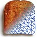

|  | |
| Image Reconstruction in Diffuse Optical Tomography |
What is Toast++?Toast++ is an open-source software suite for image reconstruction in diffuse optical tomography (DOT). DOT seeks to recover the spatial distribution of the optical parameters of a scattering object from boundary measurements of light transmission between a set of infrared light sources and a set of detectors. The main application of DOT is in medical imaging, where the optical parameters are related to important physiological tissue parameters such as the oxygenation level of blood and tissue. Parameter reconstruction in DOT is a nonlinear ill-posed inverse problem. Infrared light is highly scattered in biological tissues, and propagates as a diffuse photon density wave rather than in a straight path. The spatital sensitivity distribution of a measurement (photon measurement density function, PMDF) depends itself on the unknown optical parameters. Toast++ uses a model-based iterative approach to the DOT reconstruction problem. A numerical model of diffuse light transport is applied to the current parameter estimate at each step, and an objective function is defined as a norm of the difference between measurement and model data. The reconstruction problem is then formulated in terms of minimisation of the objective function. The problem is linearised around the current estimate at each step to find an update direction and update step. Toast++ Features
Where to get Toast++Toast++ is being developed by Martin Schweiger and Simon Arridge at University College London, UK. The Toast++ web site contains download links for the sources and binary packages, as well as tutorials, a user forum, and a list of references.
|